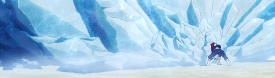
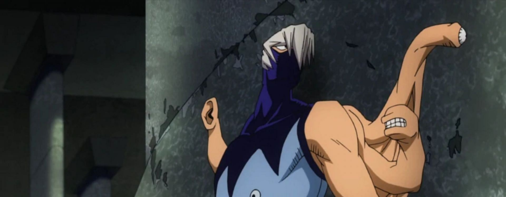
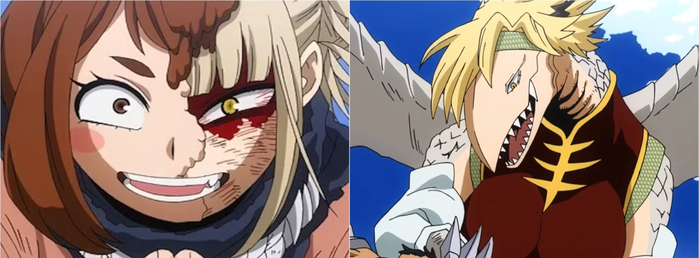
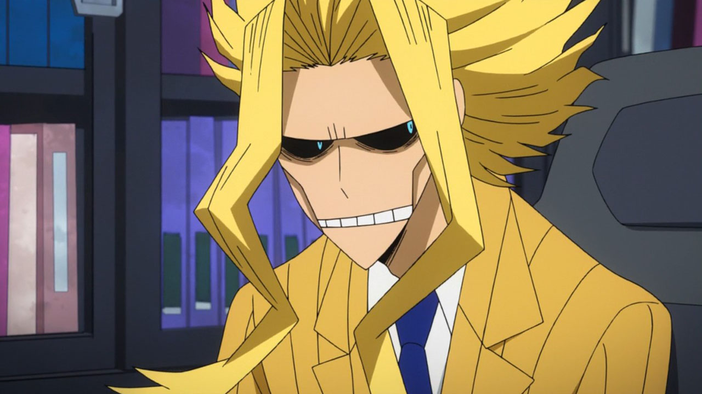

Quirks – As Individualidades
As Quirks, também conhecidas como Individualidades, são habilidades especiais que se manifestam em aproximadamente 80% da população mundial. Cada pessoa nasce com um poder único, às vezes simples, às vezes extremamente complexo.
Aqui você aprenderá sobre os três tipos principais de Quirks e como eles moldam o universo de My Hero Academia.
1) Quirks de Emissão (Emitter)
São Individualidades que permitem ao usuário emitir, liberar ou manipular energia ou substâncias. São as mais comuns em combates, pois geralmente possuem grande alcance e poder destrutivo.
- Hellflame — permite criar e controlar fogo (Endeavor)
- Electrification — libera descargas elétricas (Kaminari)
- Half-Cold Half-Hot — gelo e fogo simultâneos (Todoroki)
- One For All - permite acumular e transferir energia (Izuku Midoriya, All Might, e outros)
- All For One - permite roubar e transferir individualidades (All For One)

2) Quirks de Mutação (Mutant)
Nesse tipo de poder, o corpo do usuário já nasce fisicamente alterado. As mutações trazem vantagens enormes, mas também desafios sociais e estéticos.
- Fierce Wings — asas velozes (Hawks)
- Rabbit — força e agilidade excepcionais (Mirko)
- Lizard Tail Splitter — pode separar partes do corpo (Tokage)
- Rã - corpo com propriedades de uma rã (Tsuyu)
- Gecko - permite que o usuário se pareça com uma lagarto (Spinner)

3) Quirks de Transformação (Transformation)
Habilidades que permitem ao usuário alterar temporariamente seu corpo. Costumam exigir foco, resistência e, às vezes, possuem efeitos colaterais.
- Hardening — endurecimento corporal (Kirishima)
- Manifest — transforma partes do corpo conforme o alimento (Tamaki)
- Fa Jin — liberação de energia acumulada (Midoriya)
- Dragão - o usuário pode se transformar em um dragão (Ryuko)
- Transform - o usuário pode se transformar na aparência de outra pessoa após consumir um pouco de seu sangue.

4) Pessoas Sem Individualidade
Cerca de 20% da população nasce sem Quirk. Muitos vivem vidas comuns, enquanto outros enfrentam dificuldades sociais.
Os maiores exemplos são Izuku Midoriya e All Might, que apesar de nascer sem poder algum, nunca desistiram de se tornar um herói.
